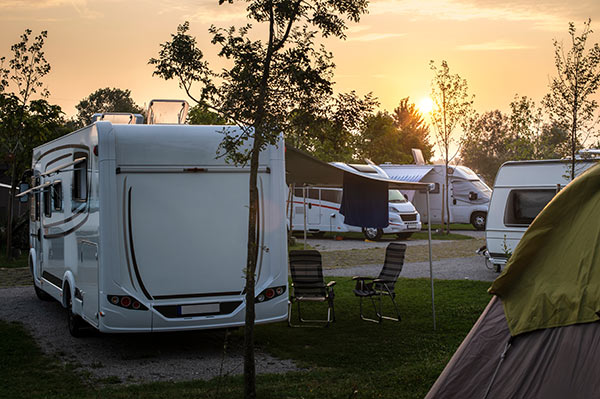

-
Legal Challenges
-
The van-life movement has changed how people think about housing and travel, blending adventure with simplicity. It’s about freedom, but for some, like the 25% of Los Angeles’ homeless population living in vehicles, it’s also a necessity. Cities often ban overnight parking or sleeping in cars, making it tough for vandwellers. Non-profits are stepping up with “safe parking” programs, and public lands allow temporary stays, but navigating these rules can be a challenge.
- 
-
Get Involved
-
Social media has made van-life look dreamy—cozy vans in epic locations—but it’s not always that simple. Sustainability and respecting local laws are big parts of doing it right. Tools like Vanlifezone help people find spots to stay and avoid protected areas. If you’re thinking about trying it, start by researching local rules and planning ways to travel responsibly. It’s a chance to live differently while keeping things sustainable for everyone.